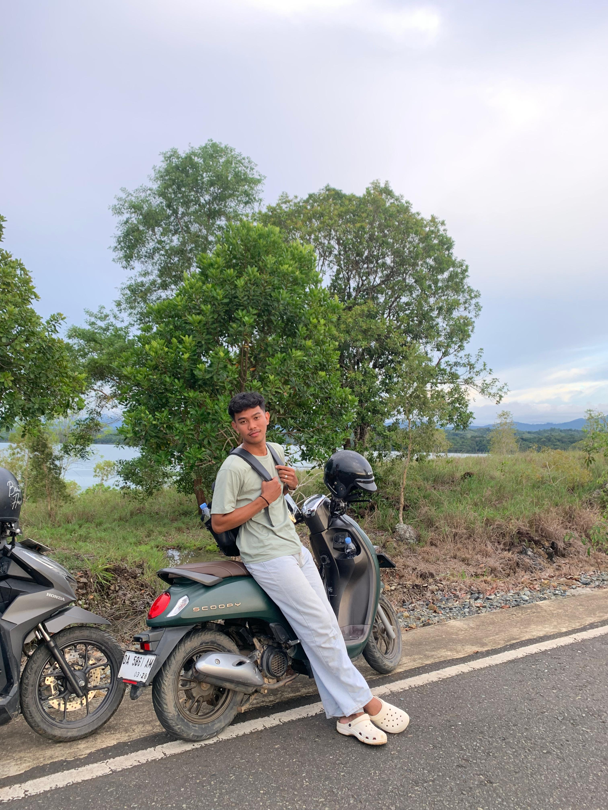

DANI_KTB
Home
Biodata
Gallery
Video
Profil Lengkap Saya

Nama Lengkap
: Muhammad Rahiel Almadani
NIM
: 2310715210010
Fakultas / Prodi
: FPIK / Sosial Ekonomi Perikanan
Tempat, Tanggal Lahir
: Pantai, 28 Agustus 2004
Email
: m.rahelalmadani@email.com
Minat / Hobi
: Masak dan renang